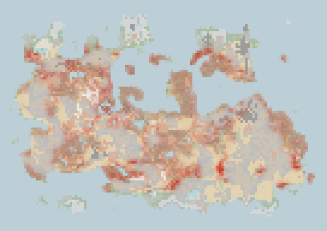
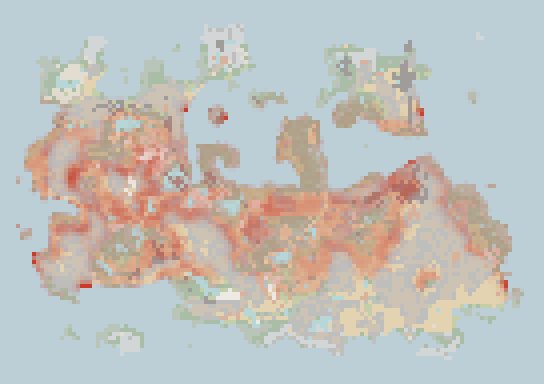
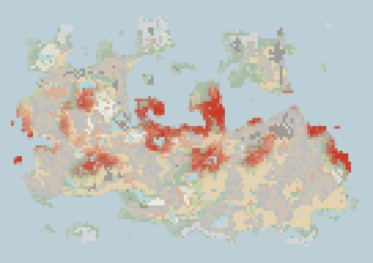
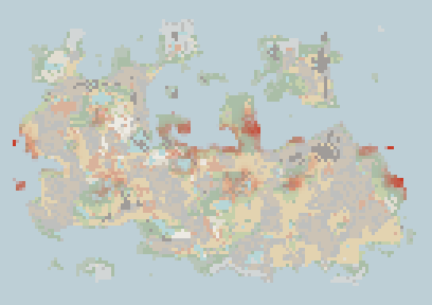
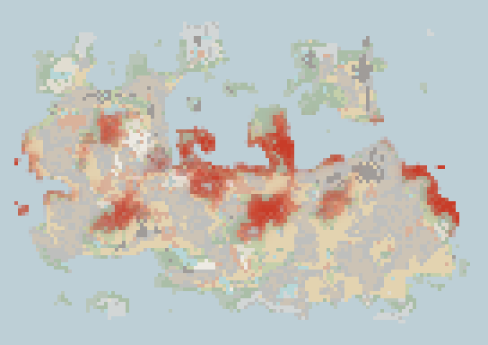
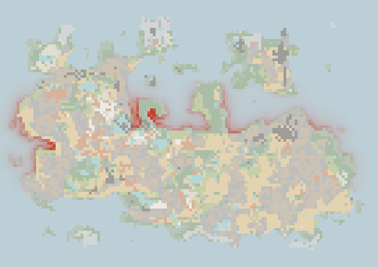

The food web
The insects, amphibians, reptiles, birds, mammals and fish are no longer scenery drawn from a habitat map. They are populations that live in the world's patches (16 by 16 tiles), eat each other and the plants, lay eggs, hatch, grow up and die, and the numbers you see are the ones this simulation keeps. A year in it is 1 game day, so a game minute is a good part of a season. Nothing is a fixed quota: a big lizard is rare because it needs a great deal of food and a great deal of ground, and a fish is eaten in numbers its own breeding can bear.
Source: src/sim/fauna/life.ts, src/sim/fauna/patches.ts, src/sim/fauna/diet.ts, src/sim/fauna/fauna.ts, src/sim/fauna/pack.ts, src/sim/fish/fish.ts, tools/foodweb.ts
1How it works
- PatchesThe world is cut into 16 tile patches, the same cells as the weather. Each keeps, for every species, how many eggs, hatchlings, juveniles and adults are in it. Habitat is read once from the world (water, shelter, open warm ground, banks) and averaged over a patch, water-bound stages from an exact count of the pond tiles.
- ClimateEach tick the patch takes its temperature from the yearly climate without the daily swing (animals shelter from the day's extremes), and its snow cover from the weather. A cold or hot patch slows feeding and development, and an extreme one kills.
- DietWho can eat whom is not typed in. A species names the kinds it eats (insects, amphibians, reptiles, birds, mammals, fish, plants) and a window of prey size relative to its own, and every stage of every species that fits, in the same medium (land, fresh water, sea), is on the menu with a weight that peaks at the middle of the window. A hatchling's window is relative to its own small mass, and a young carnivore also takes insects.
- EatingA predator's supply is the prey it can reach (each stock times how easily that kind is caught, less a refuge of 3% of its territory capacity that nobody takes, and less again when it is scarce, so a predator does not hunt the last of anything). Intake is 2 x supply / (supply + need), so it is the supply per mouth that decides: full below one, a feast above.
- Breeding and growthSurplus intake becomes eggs, up to a clutch a female can lay, only when the patch is warm enough and has a nest site. Eggs hatch with warmth, hatchlings and juveniles grow at a pace set by how well they eat, and an adult dies of old age, hunger, crowding, or what eats it.
- MovingAdults and juveniles drift toward neighbouring patches that offer more (suitable and well fed), so a booming patch spills over and an empty one fills.
2Size is the rule: need, territory, and appetite
An animal's food need is c x mass^0.67 kilograms a year (c is 9 for amphibians, 8 for birds, 5 for reptiles, 4 for insects), times an appetite for how it lives: snakes and chameleons wait and eat little (0.3 to 0.4), crocodiles 0.35, big lizards 0.5, small lizards a full 1. The territory it needs is 300 x mass^0.6 square metres. Insects are plant eaters with a fixed biomass a square metre, scaled by the habitat.
- amphibians
- reptiles at full appetite
- snakes and crocodiles
- insects
3Eggs, hatchlings, juveniles, adults
Every species but the live-bearers (adders, sidewinders, tree boas, anacondas, sea snakes, slow worms) lays eggs, except that a mammal's egg stage is its pregnancy (not edible, as long as the real gestation), and each stage is a stock of its own in every patch. Eggs are eaten by animals that eat eggs (snakes, monitors, snapping turtles, newts, ants and beetles). The young are fed by what a small animal can take, and amphibian eggs and tadpoles, and the larvae of dragonflies and midges, live in the calm water of the patch, so they need a pond. Turtles and crocodilians lay on the bank, and a sea turtle on a warm beach.
The numbers below are chosen so that a population with plenty of food and room grows by about a factor of four to eight a generation, and the rest is the world: food, crowding, heat and cold, and being eaten. Insects take a larval stage and no juvenile, amphibians have tadpoles and froglets, the big reptiles take years to grow up.
| Species | Group | Egg | Hatchling | Juvenile | Adult | Incubation | Adulthood at | Lifespan | Eggs per year per female at best |
|---|---|---|---|---|---|---|---|---|---|
| honey bee | insect | 4e-6 kg | 3e-5 kg | none | 1e-4 kg | 0.02 yr | 0.07 yr | 0.2 yr | 1368 |
| bumblebee | insect | 1e-5 kg | 9e-5 kg | none | 3e-4 kg | 0.02 yr | 0.07 yr | 0.2 yr | 1368 |
| butterfly | insect | 2e-5 kg | 1e-4 kg | none | 4e-4 kg | 0.02 yr | 0.07 yr | 0.2 yr | 1368 |
| moth | insect | 2e-5 kg | 2e-4 kg | none | 6e-4 kg | 0.02 yr | 0.07 yr | 0.2 yr | 1368 |
| dragonfly | insect | 4e-5 kg | 3e-4 kg | none | 1e-3 kg | 0.02 yr | 0.07 yr | 0.3 yr | 773 |
| midge | insect | 8e-8 kg | 6e-7 kg | none | 2e-6 kg | 0.02 yr | 0.07 yr | 0.2 yr | 1368 |
| mosquito | insect | 1e-7 kg | 9e-7 kg | none | 3e-6 kg | 0.02 yr | 0.07 yr | 0.2 yr | 1368 |
| firefly | insect | 8e-6 kg | 6e-5 kg | none | 2e-4 kg | 0.02 yr | 0.07 yr | 0.2 yr | 1368 |
| ant | insect | 1e-7 kg | 9e-7 kg | none | 3e-6 kg | 0.02 yr | 0.07 yr | 0.2 yr | 1368 |
| beetle | insect | 4e-5 kg | 3e-4 kg | none | 1e-3 kg | 0.02 yr | 0.07 yr | 0.2 yr | 1368 |
| grasshopper | insect | 4e-5 kg | 3e-4 kg | none | 1e-3 kg | 0.02 yr | 0.07 yr | 0.2 yr | 1368 |
| termite | insect | 1e-7 kg | 9e-7 kg | none | 3e-6 kg | 0.02 yr | 0.07 yr | 0.2 yr | 1368 |
| water strider | insect | 4e-6 kg | 3e-5 kg | none | 1e-4 kg | 0.02 yr | 0.07 yr | 0.2 yr | 1368 |
| fly | insect | 8e-7 kg | 6e-6 kg | none | 2e-5 kg | 0.02 yr | 0.07 yr | 0.2 yr | 1368 |
| common frog | amphibian | 8e-4 kg | 3e-3 kg | 6e-3 kg | 0.02 kg | 0.04 yr | 0.80 yr | 4.4 yr | 168 |
| common toad | amphibian | 1e-3 kg | 3e-3 kg | 0.01 kg | 0.04 kg | 0.04 yr | 0.86 yr | 4.6 yr | 159 |
| pool frog | amphibian | 1e-3 kg | 3e-3 kg | 9e-3 kg | 0.03 kg | 0.04 yr | 0.83 yr | 4.5 yr | 163 |
| tree frog | amphibian | 5e-4 kg | 2e-3 kg | 2e-3 kg | 5e-3 kg | 0.04 yr | 0.71 yr | 3.9 yr | 186 |
| fire salamander | amphibian | 1e-3 kg | 3e-3 kg | 9e-3 kg | 0.03 kg | 0.04 yr | 0.83 yr | 4.5 yr | 163 |
| smooth newt | amphibian | 6e-4 kg | 2e-3 kg | 2e-3 kg | 8e-3 kg | 0.04 yr | 0.74 yr | 4.1 yr | 179 |
| marine toad | amphibian | 0.01 kg | 0.02 kg | 0.15 kg | 0.50 kg | 0.04 yr | 1.17 yr | 5.7 yr | 134 |
| poison dart frog | amphibian | 4e-4 kg | 2e-3 kg | 6e-4 kg | 2e-3 kg | 0.04 yr | 0.67 yr | 3.7 yr | 199 |
| wood frog | amphibian | 7e-4 kg | 2e-3 kg | 4e-3 kg | 0.01 kg | 0.04 yr | 0.78 yr | 4.3 yr | 171 |
| spadefoot toad | amphibian | 8e-4 kg | 3e-3 kg | 6e-3 kg | 0.02 kg | 0.04 yr | 0.80 yr | 4.4 yr | 168 |
| axolotl | amphibian | 3e-3 kg | 6e-3 kg | 0.04 kg | 0.15 kg | 0.04 yr | 1.20 yr | 12.0 yr | 56 |
| grass snake | reptile | 8e-4 kg | 5e-3 kg | 0.05 kg | 0.30 kg | 0.16 yr | 1.34 yr | 7.9 yr | 5 |
| adder | reptile | live young | 2e-3 kg | 0.02 kg | 0.10 kg | born | 1.09 yr | 6.3 yr | 6 |
| western diamondback rattlesnake | reptile | 2e-3 kg | 0.02 kg | 0.27 kg | 1.5 kg | 0.17 yr | 1.85 yr | 10.8 yr | 4 |
| sidewinder | reptile | live young | 2e-3 kg | 0.02 kg | 0.10 kg | born | 1.09 yr | 6.3 yr | 6 |
| spectacled cobra | reptile | 2e-3 kg | 0.02 kg | 0.27 kg | 1.5 kg | 0.17 yr | 1.85 yr | 10.8 yr | 4 |
| king cobra | reptile | 5e-3 kg | 0.04 kg | 1.1 kg | 6.0 kg | 0.19 yr | 2.49 yr | 14.3 yr | 3 |
| black mamba | reptile | 2e-3 kg | 0.02 kg | 0.29 kg | 1.6 kg | 0.17 yr | 1.87 yr | 11.0 yr | 4 |
| green anaconda | reptile | live young | 0.19 kg | 9.0 kg | 50.0 kg | born | 4.02 yr | 21.9 yr | 2 |
| reticulated python | reptile | 0.01 kg | 0.16 kg | 7.2 kg | 40.0 kg | 0.22 yr | 3.82 yr | 20.9 yr | 2 |
| coral snake | reptile | 3e-4 kg | 2e-3 kg | 0.01 kg | 0.06 kg | 0.15 yr | 0.99 yr | 5.7 yr | 7 |
| emerald tree boa | reptile | live young | 0.01 kg | 0.14 kg | 0.80 kg | born | 1.62 yr | 9.6 yr | 4 |
| banded sea snake | reptile | live young | 6e-3 kg | 0.07 kg | 0.40 kg | born | 1.41 yr | 8.3 yr | 5 |
| slow worm | reptile | live young | 1e-3 kg | 7e-3 kg | 0.04 kg | born | 0.93 yr | 5.3 yr | 7 |
| common wall lizard | reptile | 3e-4 kg | 4e-4 kg | 9e-4 kg | 5e-3 kg | 0.14 yr | 0.67 yr | 3.5 yr | 11 |
| European green lizard | reptile | 3e-4 kg | 1e-3 kg | 7e-3 kg | 0.04 kg | 0.15 yr | 0.93 yr | 5.3 yr | 7 |
| house gecko | reptile | 3e-4 kg | 5e-4 kg | 2e-3 kg | 0.01 kg | 0.14 yr | 0.74 yr | 4.0 yr | 10 |
| green iguana | reptile | 4e-3 kg | 0.03 kg | 0.72 kg | 4.0 kg | 0.19 yr | 2.28 yr | 13.2 yr | 3 |
| marine iguana | reptile | 2e-3 kg | 0.02 kg | 0.27 kg | 1.5 kg | 0.17 yr | 1.85 yr | 10.8 yr | 4 |
| bearded dragon | reptile | 9e-4 kg | 6e-3 kg | 0.07 kg | 0.40 kg | 0.16 yr | 1.41 yr | 8.3 yr | 5 |
| thorny devil | reptile | 3e-4 kg | 1e-3 kg | 9e-3 kg | 0.05 kg | 0.15 yr | 0.96 yr | 5.5 yr | 7 |
| blue-tongued skink | reptile | 9e-4 kg | 6e-3 kg | 0.07 kg | 0.40 kg | 0.16 yr | 1.41 yr | 8.3 yr | 5 |
| Komodo dragon | reptile | 0.02 kg | 0.23 kg | 12.6 kg | 70.0 kg | 0.24 yr | 4.35 yr | 23.4 yr | 2 |
| Nile monitor | reptile | 4e-3 kg | 0.04 kg | 0.90 kg | 5.0 kg | 0.19 yr | 2.39 yr | 13.8 yr | 3 |
| basilisk | reptile | 6e-4 kg | 4e-3 kg | 0.04 kg | 0.20 kg | 0.16 yr | 1.24 yr | 7.2 yr | 5 |
| veiled chameleon | reptile | 4e-4 kg | 2e-3 kg | 0.02 kg | 0.10 kg | 0.15 yr | 1.09 yr | 6.3 yr | 6 |
| panther chameleon | reptile | 5e-4 kg | 3e-3 kg | 0.03 kg | 0.15 kg | 0.15 yr | 1.17 yr | 6.8 yr | 6 |
| pond slider | reptile | 2e-3 kg | 0.01 kg | 0.18 kg | 1.0 kg | 0.17 yr | 1.70 yr | 10.0 yr | 4 |
| snapping turtle | reptile | 6e-3 kg | 0.05 kg | 1.4 kg | 8.0 kg | 0.20 yr | 2.65 yr | 15.2 yr | 3 |
| box turtle | reptile | 9e-4 kg | 6e-3 kg | 0.07 kg | 0.40 kg | 0.16 yr | 1.41 yr | 8.3 yr | 5 |
| giant tortoise | reptile | 0.04 kg | 0.57 kg | 45.0 kg | 250 kg | 0.27 yr | 5.87 yr | 30.2 yr | 1 |
| desert tortoise | reptile | 4e-3 kg | 0.03 kg | 0.72 kg | 4.0 kg | 0.19 yr | 2.28 yr | 13.2 yr | 3 |
| green sea turtle | reptile | 0.03 kg | 0.40 kg | 27.0 kg | 150 kg | 0.26 yr | 5.20 yr | 27.2 yr | 1 |
| American alligator | reptile | 0.04 kg | 0.49 kg | 36.0 kg | 200 kg | 0.26 yr | 5.56 yr | 28.9 yr | 1 |
| Nile crocodile | reptile | 0.06 kg | 0.80 kg | 72.0 kg | 400 kg | 0.29 yr | 6.56 yr | 33.1 yr | 1 |
| saltwater crocodile | reptile | 0.07 kg | 0.93 kg | 90.0 kg | 500 kg | 0.29 yr | 6.92 yr | 34.7 yr | 1 |
| spectacled caiman | reptile | 0.01 kg | 0.13 kg | 5.4 kg | 30.0 kg | 0.22 yr | 3.58 yr | 19.7 yr | 2 |
| gharial | reptile | 0.03 kg | 0.42 kg | 28.8 kg | 160 kg | 0.26 yr | 5.28 yr | 27.6 yr | 1 |
| house sparrow | bird | 3e-3 kg | 0.01 kg | 0.02 kg | 0.03 kg | 0.04 yr | 0.57 yr | 4.4 yr | 7 |
| robin | bird | 2e-3 kg | 7e-3 kg | 0.02 kg | 0.02 kg | 0.04 yr | 0.55 yr | 4.2 yr | 7 |
| blue tit | bird | 1e-3 kg | 4e-3 kg | 9e-3 kg | 0.01 kg | 0.04 yr | 0.53 yr | 4.0 yr | 8 |
| barn swallow | bird | 2e-3 kg | 8e-3 kg | 0.02 kg | 0.02 kg | 0.04 yr | 0.55 yr | 4.3 yr | 7 |
| starling | bird | 6e-3 kg | 0.03 kg | 0.07 kg | 0.08 kg | 0.05 yr | 0.63 yr | 5.0 yr | 6 |
| wood pigeon | bird | 0.02 kg | 0.14 kg | 0.30 kg | 0.35 kg | 0.06 yr | 0.76 yr | 6.1 yr | 5 |
| carrion crow | bird | 0.03 kg | 0.20 kg | 0.42 kg | 0.50 kg | 0.07 yr | 0.81 yr | 6.4 yr | 5 |
| great spotted woodpecker | bird | 6e-3 kg | 0.03 kg | 0.07 kg | 0.08 kg | 0.05 yr | 0.63 yr | 5.0 yr | 6 |
| scarlet macaw | bird | 0.04 kg | 0.36 kg | 0.77 kg | 0.90 kg | 0.08 yr | 0.88 yr | 6.9 yr | 4 |
| ruby-throated hummingbird | bird | 6e-4 kg | 2e-3 kg | 3e-3 kg | 4e-3 kg | 0.04 yr | 0.50 yr | 3.7 yr | 8 |
| kestrel | bird | 0.01 kg | 0.08 kg | 0.17 kg | 0.20 kg | 0.06 yr | 0.71 yr | 5.6 yr | 5 |
| tawny owl | bird | 0.02 kg | 0.18 kg | 0.38 kg | 0.45 kg | 0.07 yr | 0.79 yr | 6.3 yr | 5 |
| golden eagle | bird | 0.14 kg | 1.8 kg | 3.8 kg | 4.5 kg | 0.11 yr | 1.19 yr | 8.8 yr | 4 |
| mallard | bird | 0.05 kg | 0.44 kg | 0.94 kg | 1.1 kg | 0.08 yr | 0.91 yr | 7.1 yr | 4 |
| grey heron | bird | 0.06 kg | 0.60 kg | 1.3 kg | 1.5 kg | 0.09 yr | 0.96 yr | 7.4 yr | 4 |
| kingfisher | bird | 4e-3 kg | 0.02 kg | 0.03 kg | 0.04 kg | 0.05 yr | 0.59 yr | 4.6 yr | 7 |
| herring gull | bird | 0.04 kg | 0.40 kg | 0.85 kg | 1.0 kg | 0.08 yr | 0.90 yr | 7.0 yr | 4 |
| great cormorant | bird | 0.08 kg | 0.80 kg | 1.7 kg | 2.0 kg | 0.09 yr | 1.02 yr | 7.7 yr | 4 |
| common pheasant | bird | 0.04 kg | 0.40 kg | 0.85 kg | 1.0 kg | 0.08 yr | 0.90 yr | 7.0 yr | 4 |
| white stork | bird | 0.12 kg | 1.4 kg | 3.0 kg | 3.5 kg | 0.11 yr | 1.13 yr | 8.4 yr | 4 |
| emu | bird | 0.70 kg | 14.0 kg | 29.8 kg | 35.0 kg | 0.20 yr | 1.85 yr | 12.2 yr | 3 |
| ostrich | bird | 1.6 kg | 40.0 kg | 85.0 kg | 100 kg | 0.28 yr | 2.39 yr | 14.6 yr | 2 |
| wild turkey | bird | 0.20 kg | 2.8 kg | 6.0 kg | 7.0 kg | 0.13 yr | 1.30 yr | 9.4 yr | 3 |
| peacock | bird | 0.14 kg | 1.8 kg | 3.8 kg | 4.5 kg | 0.11 yr | 1.19 yr | 8.8 yr | 4 |
| red junglefowl | bird | 0.06 kg | 0.60 kg | 1.3 kg | 1.5 kg | 0.09 yr | 0.96 yr | 7.4 yr | 4 |
| red-tailed hawk | bird | 0.05 kg | 0.44 kg | 0.94 kg | 1.1 kg | 0.08 yr | 0.91 yr | 7.1 yr | 4 |
| emperor penguin | bird | 0.54 kg | 10.0 kg | 21.3 kg | 25.0 kg | 0.18 yr | 1.71 yr | 11.5 yr | 3 |
| greater flamingo | bird | 0.10 kg | 1.2 kg | 2.5 kg | 3.0 kg | 0.10 yr | 1.10 yr | 8.2 yr | 4 |
| mute swan | bird | 0.26 kg | 4.0 kg | 8.5 kg | 10.0 kg | 0.14 yr | 1.40 yr | 9.9 yr | 3 |
| greylag goose | bird | 0.12 kg | 1.4 kg | 3.0 kg | 3.5 kg | 0.11 yr | 1.13 yr | 8.4 yr | 4 |
| great white pelican | bird | 0.22 kg | 3.2 kg | 6.8 kg | 8.0 kg | 0.13 yr | 1.33 yr | 9.6 yr | 3 |
| griffon vulture | bird | 0.20 kg | 2.8 kg | 6.0 kg | 7.0 kg | 0.13 yr | 1.30 yr | 9.4 yr | 3 |
| snowy owl | bird | 0.08 kg | 0.80 kg | 1.7 kg | 2.0 kg | 0.09 yr | 1.02 yr | 7.7 yr | 4 |
| toco toucan | bird | 0.03 kg | 0.24 kg | 0.51 kg | 0.60 kg | 0.07 yr | 0.83 yr | 6.5 yr | 5 |
| common crane | bird | 0.16 kg | 2.0 kg | 4.3 kg | 5.0 kg | 0.12 yr | 1.21 yr | 8.9 yr | 3 |
| European mole | mammal | 9e-3 kg | 9e-3 kg | 0.04 kg | 0.10 kg | 0.10 yr | 0.30 yr | 3.0 yr | 11 |
| star-nosed mole | mammal | 5e-3 kg | 5e-3 kg | 0.02 kg | 0.05 kg | 0.12 yr | 0.80 yr | 3.0 yr | 17 |
| hedgehog | mammal | 0.06 kg | 0.06 kg | 0.32 kg | 0.80 kg | 0.15 yr | 1.00 yr | 5.0 yr | 4 |
| common shrew | mammal | 1e-3 kg | 1e-3 kg | 4e-3 kg | 0.01 kg | 0.05 yr | 0.15 yr | 1.5 yr | 33 |
| naked mole-rat | mammal | 4e-3 kg | 4e-3 kg | 0.01 kg | 0.04 kg | 0.15 yr | 1.00 yr | 30.0 yr | 1 |
| pocket gopher | mammal | 0.01 kg | 0.01 kg | 0.06 kg | 0.15 kg | 0.10 yr | 0.50 yr | 4.0 yr | 7 |
| aardvark | mammal | 2.8 kg | 2.8 kg | 22.0 kg | 55.0 kg | 0.60 yr | 2.00 yr | 23.0 yr | 0 |
| giant anteater | mammal | 1.6 kg | 1.6 kg | 12.0 kg | 30.0 kg | 0.50 yr | 3.00 yr | 20.0 yr | 0 |
| ground pangolin | mammal | 0.49 kg | 0.49 kg | 3.2 kg | 8.0 kg | 0.35 yr | 2.00 yr | 15.0 yr | 1 |
| nine-banded armadillo | mammal | 0.32 kg | 0.32 kg | 2.0 kg | 5.0 kg | 0.30 yr | 1.00 yr | 12.0 yr | 1 |
| short-beaked echidna | mammal | 4e-3 kg | 0.02 kg | 1.6 kg | 4.0 kg | 0.03 yr | 3.00 yr | 16.0 yr | 1 |
| platypus | mammal | 2e-3 kg | 0.01 kg | 0.60 kg | 1.5 kg | 0.04 yr | 2.00 yr | 12.0 yr | 2 |
| wood mouse | mammal | 2e-3 kg | 2e-3 kg | 8e-3 kg | 0.02 kg | 0.06 yr | 0.15 yr | 1.5 yr | 31 |
| brown rat | mammal | 0.03 kg | 0.03 kg | 0.12 kg | 0.30 kg | 0.06 yr | 0.30 yr | 2.0 yr | 12 |
| field vole | mammal | 3e-3 kg | 3e-3 kg | 0.01 kg | 0.03 kg | 0.06 yr | 0.15 yr | 1.5 yr | 30 |
| Norway lemming | mammal | 6e-3 kg | 6e-3 kg | 0.02 kg | 0.06 kg | 0.06 yr | 0.20 yr | 2.0 yr | 19 |
| common hamster | mammal | 0.03 kg | 0.03 kg | 0.12 kg | 0.30 kg | 0.06 yr | 0.30 yr | 3.0 yr | 7 |
| red squirrel | mammal | 0.03 kg | 0.03 kg | 0.12 kg | 0.30 kg | 0.12 yr | 1.00 yr | 6.0 yr | 4 |
| northern flying squirrel | mammal | 0.01 kg | 0.01 kg | 0.06 kg | 0.14 kg | 0.10 yr | 1.00 yr | 6.0 yr | 5 |
| eastern chipmunk | mammal | 9e-3 kg | 9e-3 kg | 0.04 kg | 0.10 kg | 0.10 yr | 0.80 yr | 5.0 yr | 7 |
| alpine marmot | mammal | 0.26 kg | 0.26 kg | 1.6 kg | 4.0 kg | 0.11 yr | 3.00 yr | 15.0 yr | 1 |
| prairie dog | mammal | 0.07 kg | 0.07 kg | 0.40 kg | 1.0 kg | 0.10 yr | 2.00 yr | 8.0 yr | 2 |
| hazel dormouse | mammal | 3e-3 kg | 3e-3 kg | 0.01 kg | 0.03 kg | 0.06 yr | 1.00 yr | 5.0 yr | 10 |
| North American beaver | mammal | 1.1 kg | 1.1 kg | 8.0 kg | 20.0 kg | 0.30 yr | 2.50 yr | 12.0 yr | 1 |
| muskrat | mammal | 0.09 kg | 0.09 kg | 0.48 kg | 1.2 kg | 0.07 yr | 0.50 yr | 3.0 yr | 5 |
| capybara | mammal | 2.5 kg | 2.5 kg | 20.0 kg | 50.0 kg | 0.40 yr | 1.50 yr | 8.0 yr | 1 |
| crested porcupine | mammal | 0.86 kg | 0.86 kg | 6.0 kg | 15.0 kg | 0.20 yr | 2.00 yr | 15.0 yr | 0 |
| red-rumped agouti | mammal | 0.20 kg | 0.20 kg | 1.2 kg | 3.0 kg | 0.30 yr | 1.00 yr | 15.0 yr | 1 |
| Patagonian mara | mammal | 0.60 kg | 0.60 kg | 4.0 kg | 10.0 kg | 0.25 yr | 1.00 yr | 12.0 yr | 1 |
| greater jerboa | mammal | 7e-3 kg | 7e-3 kg | 0.03 kg | 0.07 kg | 0.10 yr | 0.30 yr | 3.0 yr | 12 |
| European rabbit | mammal | 0.11 kg | 0.11 kg | 0.64 kg | 1.6 kg | 0.09 yr | 0.50 yr | 3.0 yr | 5 |
| brown hare | mammal | 0.23 kg | 0.23 kg | 1.4 kg | 3.5 kg | 0.13 yr | 0.80 yr | 5.0 yr | 2 |
| Arctic hare | mammal | 0.26 kg | 0.26 kg | 1.6 kg | 4.0 kg | 0.13 yr | 0.80 yr | 5.0 yr | 2 |
| American pika | mammal | 0.01 kg | 0.01 kg | 0.06 kg | 0.15 kg | 0.08 yr | 1.00 yr | 5.0 yr | 6 |
| Barbary macaque | mammal | 0.60 kg | 0.60 kg | 4.0 kg | 10.0 kg | 0.45 yr | 4.00 yr | 25.0 yr | 0 |
| Japanese macaque | mammal | 0.60 kg | 0.60 kg | 4.0 kg | 10.0 kg | 0.45 yr | 4.00 yr | 25.0 yr | 0 |
| olive baboon | mammal | 1.1 kg | 1.1 kg | 8.0 kg | 20.0 kg | 0.50 yr | 6.00 yr | 30.0 yr | 0 |
| chimpanzee | mammal | 2.3 kg | 2.3 kg | 18.0 kg | 45.0 kg | 0.60 yr | 11.00 yr | 45.0 yr | 0 |
| western gorilla | mammal | 6.8 kg | 6.8 kg | 60.0 kg | 150 kg | 0.70 yr | 10.00 yr | 40.0 yr | 0 |
| orangutan | mammal | 3.0 kg | 3.0 kg | 24.0 kg | 60.0 kg | 0.65 yr | 12.00 yr | 45.0 yr | 0 |
| howler monkey | mammal | 0.43 kg | 0.43 kg | 2.8 kg | 7.0 kg | 0.50 yr | 4.00 yr | 20.0 yr | 0 |
| spider monkey | mammal | 0.49 kg | 0.49 kg | 3.2 kg | 8.0 kg | 0.60 yr | 5.00 yr | 25.0 yr | 0 |
| ring-tailed lemur | mammal | 0.17 kg | 0.17 kg | 1.0 kg | 2.5 kg | 0.35 yr | 2.50 yr | 18.0 yr | 1 |
| white-handed gibbon | mammal | 0.38 kg | 0.38 kg | 2.4 kg | 6.0 kg | 0.50 yr | 8.00 yr | 30.0 yr | 0 |
| common pipistrelle | mammal | 6e-4 kg | 6e-4 kg | 2e-3 kg | 5e-3 kg | 0.15 yr | 1.00 yr | 10.0 yr | 5 |
| grey-headed flying fox | mammal | 0.05 kg | 0.05 kg | 0.28 kg | 0.70 kg | 0.50 yr | 2.00 yr | 20.0 yr | 1 |
| Mexican free-tailed bat | mammal | 1e-3 kg | 1e-3 kg | 5e-3 kg | 0.01 kg | 0.20 yr | 1.00 yr | 12.0 yr | 4 |
| grey wolf | mammal | 2.1 kg | 2.1 kg | 16.0 kg | 40.0 kg | 0.17 yr | 2.00 yr | 8.0 yr | 1 |
| red fox | mammal | 0.38 kg | 0.38 kg | 2.4 kg | 6.0 kg | 0.14 yr | 1.00 yr | 5.0 yr | 2 |
| Arctic fox | mammal | 0.23 kg | 0.23 kg | 1.4 kg | 3.5 kg | 0.14 yr | 1.00 yr | 5.0 yr | 2 |
| fennec fox | mammal | 0.09 kg | 0.09 kg | 0.48 kg | 1.2 kg | 0.14 yr | 0.80 yr | 10.0 yr | 1 |
| coyote | mammal | 0.86 kg | 0.86 kg | 6.0 kg | 15.0 kg | 0.17 yr | 1.00 yr | 8.0 yr | 1 |
| golden jackal | mammal | 0.54 kg | 0.54 kg | 3.6 kg | 9.0 kg | 0.17 yr | 1.00 yr | 8.0 yr | 1 |
| African wild dog | mammal | 1.4 kg | 1.4 kg | 10.0 kg | 25.0 kg | 0.20 yr | 1.80 yr | 11.0 yr | 1 |
| lion | mammal | 8.4 kg | 8.4 kg | 76.0 kg | 190 kg | 0.30 yr | 3.50 yr | 14.0 yr | 0 |
| tiger | mammal | 9.6 kg | 9.6 kg | 88.0 kg | 220 kg | 0.28 yr | 4.00 yr | 15.0 yr | 0 |
| leopard | mammal | 2.8 kg | 2.8 kg | 22.0 kg | 55.0 kg | 0.26 yr | 2.50 yr | 14.0 yr | 0 |
| jaguar | mammal | 4.3 kg | 4.3 kg | 36.0 kg | 90.0 kg | 0.28 yr | 3.00 yr | 14.0 yr | 0 |
| cheetah | mammal | 2.5 kg | 2.5 kg | 20.0 kg | 50.0 kg | 0.26 yr | 2.50 yr | 12.0 yr | 1 |
| puma | mammal | 3.0 kg | 3.0 kg | 24.0 kg | 60.0 kg | 0.27 yr | 2.50 yr | 13.0 yr | 0 |
| snow leopard | mammal | 2.1 kg | 2.1 kg | 16.0 kg | 40.0 kg | 0.27 yr | 2.50 yr | 14.0 yr | 0 |
| Eurasian lynx | mammal | 1.1 kg | 1.1 kg | 8.0 kg | 20.0 kg | 0.18 yr | 2.00 yr | 15.0 yr | 0 |
| wildcat | mammal | 0.32 kg | 0.32 kg | 2.0 kg | 5.0 kg | 0.17 yr | 1.00 yr | 10.0 yr | 1 |
| spotted hyena | mammal | 3.0 kg | 3.0 kg | 24.0 kg | 60.0 kg | 0.27 yr | 3.00 yr | 20.0 yr | 0 |
| brown bear | mammal | 10.8 kg | 10.8 kg | 100 kg | 250 kg | 0.55 yr | 5.00 yr | 25.0 yr | 0 |
| polar bear | mammal | 18.3 kg | 18.3 kg | 180 kg | 450 kg | 0.60 yr | 5.00 yr | 25.0 yr | 0 |
| American black bear | mammal | 5.2 kg | 5.2 kg | 44.0 kg | 110 kg | 0.55 yr | 4.00 yr | 20.0 yr | 0 |
| giant panda | mammal | 4.7 kg | 4.7 kg | 40.0 kg | 100 kg | 0.40 yr | 6.00 yr | 20.0 yr | 0 |
| stoat | mammal | 0.02 kg | 0.02 kg | 0.10 kg | 0.25 kg | 0.10 yr | 1.00 yr | 3.0 yr | 10 |
| pine marten | mammal | 0.11 kg | 0.11 kg | 0.60 kg | 1.5 kg | 0.12 yr | 1.50 yr | 8.0 yr | 2 |
| European badger | mammal | 0.65 kg | 0.65 kg | 4.4 kg | 11.0 kg | 0.12 yr | 1.50 yr | 10.0 yr | 1 |
| Eurasian otter | mammal | 0.49 kg | 0.49 kg | 3.2 kg | 8.0 kg | 0.17 yr | 2.00 yr | 10.0 yr | 1 |
| sea otter | mammal | 1.4 kg | 1.4 kg | 10.0 kg | 25.0 kg | 0.50 yr | 4.00 yr | 15.0 yr | 0 |
| wolverine | mammal | 0.81 kg | 0.81 kg | 5.6 kg | 14.0 kg | 0.12 yr | 2.00 yr | 12.0 yr | 1 |
| honey badger | mammal | 0.60 kg | 0.60 kg | 4.0 kg | 10.0 kg | 0.17 yr | 1.50 yr | 20.0 yr | 0 |
| striped skunk | mammal | 0.17 kg | 0.17 kg | 1.0 kg | 2.5 kg | 0.17 yr | 1.00 yr | 6.0 yr | 2 |
| giant otter | mammal | 1.6 kg | 1.6 kg | 12.0 kg | 30.0 kg | 0.19 yr | 2.50 yr | 12.0 yr | 1 |
| meerkat | mammal | 0.05 kg | 0.05 kg | 0.28 kg | 0.70 kg | 0.20 yr | 1.00 yr | 12.0 yr | 1 |
| banded mongoose | mammal | 0.11 kg | 0.11 kg | 0.60 kg | 1.5 kg | 0.17 yr | 1.00 yr | 10.0 yr | 1 |
| raccoon | mammal | 0.43 kg | 0.43 kg | 2.8 kg | 7.0 kg | 0.17 yr | 1.00 yr | 8.0 yr | 1 |
| white-nosed coati | mammal | 0.26 kg | 0.26 kg | 1.6 kg | 4.0 kg | 0.18 yr | 2.00 yr | 10.0 yr | 1 |
| harbour seal | mammal | 4.3 kg | 4.3 kg | 36.0 kg | 90.0 kg | 0.75 yr | 4.00 yr | 25.0 yr | 0 |
| southern elephant seal | mammal | 70.1 kg | 70.1 kg | 800 kg | 2000 kg | 0.90 yr | 5.00 yr | 20.0 yr | 0 |
| California sea lion | mammal | 10.8 kg | 10.8 kg | 100 kg | 250 kg | 0.90 yr | 4.00 yr | 20.0 yr | 0 |
| walrus | mammal | 37.6 kg | 37.6 kg | 400 kg | 1000 kg | 1.20 yr | 8.00 yr | 40.0 yr | 0 |
| leopard seal | mammal | 16.5 kg | 16.5 kg | 160 kg | 400 kg | 0.90 yr | 4.00 yr | 25.0 yr | 0 |
| red kangaroo | mammal | 3.0 kg | 3.0 kg | 24.0 kg | 60.0 kg | 0.10 yr | 2.00 yr | 15.0 yr | 0 |
| red-necked wallaby | mammal | 0.86 kg | 0.86 kg | 6.0 kg | 15.0 kg | 0.10 yr | 1.50 yr | 12.0 yr | 1 |
| koala | mammal | 0.49 kg | 0.49 kg | 3.2 kg | 8.0 kg | 0.10 yr | 3.00 yr | 15.0 yr | 1 |
| common wombat | mammal | 1.6 kg | 1.6 kg | 12.0 kg | 30.0 kg | 0.09 yr | 2.00 yr | 15.0 yr | 0 |
| Tasmanian devil | mammal | 0.49 kg | 0.49 kg | 3.2 kg | 8.0 kg | 0.06 yr | 2.00 yr | 7.0 yr | 1 |
| common brushtail possum | mammal | 0.23 kg | 0.23 kg | 1.4 kg | 3.5 kg | 0.05 yr | 1.00 yr | 11.0 yr | 1 |
| Virginia opossum | mammal | 0.20 kg | 0.20 kg | 1.2 kg | 3.0 kg | 0.04 yr | 0.50 yr | 3.0 yr | 4 |
| sugar glider | mammal | 0.01 kg | 0.01 kg | 0.05 kg | 0.13 kg | 0.05 yr | 1.00 yr | 8.0 yr | 4 |
| blue whale | mammal | 2372 kg | 2372 kg | 40000 kg | 100000 kg | 1.00 yr | 10.00 yr | 80.0 yr | 0 |
| humpback whale | mammal | 803 kg | 803 kg | 12000 kg | 30000 kg | 1.00 yr | 8.00 yr | 60.0 yr | 0 |
| grey whale | mammal | 803 kg | 803 kg | 12000 kg | 30000 kg | 1.10 yr | 8.00 yr | 60.0 yr | 0 |
| sperm whale | mammal | 681 kg | 681 kg | 10000 kg | 25000 kg | 1.30 yr | 12.00 yr | 60.0 yr | 0 |
| killer whale | mammal | 131 kg | 131 kg | 1600 kg | 4000 kg | 1.40 yr | 12.00 yr | 60.0 yr | 0 |
| bottlenose dolphin | mammal | 8.8 kg | 8.8 kg | 80.0 kg | 200 kg | 1.00 yr | 8.00 yr | 40.0 yr | 0 |
| common dolphin | mammal | 3.9 kg | 3.9 kg | 32.0 kg | 80.0 kg | 0.95 yr | 5.00 yr | 30.0 yr | 0 |
| harbour porpoise | mammal | 2.8 kg | 2.8 kg | 22.0 kg | 55.0 kg | 0.90 yr | 4.00 yr | 20.0 yr | 0 |
| beluga | mammal | 47.6 kg | 47.6 kg | 520 kg | 1300 kg | 1.20 yr | 8.00 yr | 50.0 yr | 0 |
| narwhal | mammal | 54.1 kg | 54.1 kg | 600 kg | 1500 kg | 1.30 yr | 10.00 yr | 50.0 yr | 0 |
| Amazon river dolphin | mammal | 4.7 kg | 4.7 kg | 40.0 kg | 100 kg | 0.90 yr | 7.00 yr | 30.0 yr | 0 |
| West Indian manatee | mammal | 20.1 kg | 20.1 kg | 200 kg | 500 kg | 1.00 yr | 6.00 yr | 50.0 yr | 0 |
| dugong | mammal | 12.7 kg | 12.7 kg | 120 kg | 300 kg | 1.00 yr | 8.00 yr | 50.0 yr | 0 |
| plains zebra | mammal | 12.7 kg | 12.7 kg | 120 kg | 300 kg | 0.90 yr | 3.00 yr | 20.0 yr | 0 |
| Przewalski horse | mammal | 12.7 kg | 12.7 kg | 120 kg | 300 kg | 0.90 yr | 3.00 yr | 25.0 yr | 0 |
| Asiatic wild ass | mammal | 10.8 kg | 10.8 kg | 100 kg | 250 kg | 0.90 yr | 3.00 yr | 25.0 yr | 0 |
| white rhinoceros | mammal | 79.5 kg | 79.5 kg | 920 kg | 2300 kg | 1.30 yr | 7.00 yr | 40.0 yr | 0 |
| Indian rhinoceros | mammal | 70.1 kg | 70.1 kg | 800 kg | 2000 kg | 1.30 yr | 7.00 yr | 40.0 yr | 0 |
| Malayan tapir | mammal | 12.7 kg | 12.7 kg | 120 kg | 300 kg | 1.10 yr | 4.00 yr | 30.0 yr | 0 |
| hippopotamus | mammal | 54.1 kg | 54.1 kg | 600 kg | 1500 kg | 0.65 yr | 7.00 yr | 40.0 yr | 0 |
| wild boar | mammal | 4.7 kg | 4.7 kg | 40.0 kg | 100 kg | 0.33 yr | 1.50 yr | 10.0 yr | 1 |
| common warthog | mammal | 3.9 kg | 3.9 kg | 32.0 kg | 80.0 kg | 0.45 yr | 1.50 yr | 12.0 yr | 0 |
| collared peccary | mammal | 1.4 kg | 1.4 kg | 10.0 kg | 25.0 kg | 0.38 yr | 1.00 yr | 12.0 yr | 0 |
| dromedary | mammal | 20.1 kg | 20.1 kg | 200 kg | 500 kg | 1.10 yr | 5.00 yr | 40.0 yr | 0 |
| wild Bactrian camel | mammal | 18.3 kg | 18.3 kg | 180 kg | 450 kg | 1.10 yr | 5.00 yr | 40.0 yr | 0 |
| guanaco | mammal | 5.2 kg | 5.2 kg | 44.0 kg | 110 kg | 0.95 yr | 2.00 yr | 20.0 yr | 0 |
| giraffe | mammal | 37.6 kg | 37.6 kg | 400 kg | 1000 kg | 1.30 yr | 5.00 yr | 25.0 yr | 0 |
| red deer | mammal | 6.8 kg | 6.8 kg | 60.0 kg | 150 kg | 0.60 yr | 2.50 yr | 15.0 yr | 0 |
| roe deer | mammal | 1.4 kg | 1.4 kg | 10.0 kg | 25.0 kg | 0.60 yr | 1.50 yr | 10.0 yr | 1 |
| fallow deer | mammal | 3.0 kg | 3.0 kg | 24.0 kg | 60.0 kg | 0.60 yr | 2.00 yr | 15.0 yr | 0 |
| moose | mammal | 16.5 kg | 16.5 kg | 160 kg | 400 kg | 0.65 yr | 3.00 yr | 18.0 yr | 0 |
| reindeer | mammal | 4.7 kg | 4.7 kg | 40.0 kg | 100 kg | 0.55 yr | 2.00 yr | 12.0 yr | 0 |
| white-tailed deer | mammal | 3.4 kg | 3.4 kg | 28.0 kg | 70.0 kg | 0.55 yr | 2.00 yr | 12.0 yr | 0 |
| American bison | mammal | 27.3 kg | 27.3 kg | 280 kg | 700 kg | 0.75 yr | 3.00 yr | 20.0 yr | 0 |
| African buffalo | mammal | 23.7 kg | 23.7 kg | 240 kg | 600 kg | 0.90 yr | 4.00 yr | 20.0 yr | 0 |
| water buffalo | mammal | 27.3 kg | 27.3 kg | 280 kg | 700 kg | 0.95 yr | 3.00 yr | 25.0 yr | 0 |
| wild yak | mammal | 20.1 kg | 20.1 kg | 200 kg | 500 kg | 0.70 yr | 4.00 yr | 20.0 yr | 0 |
| muskox | mammal | 12.7 kg | 12.7 kg | 120 kg | 300 kg | 0.65 yr | 3.00 yr | 15.0 yr | 0 |
| blue wildebeest | mammal | 8.8 kg | 8.8 kg | 80.0 kg | 200 kg | 0.70 yr | 2.00 yr | 20.0 yr | 0 |
| impala | mammal | 2.8 kg | 2.8 kg | 22.0 kg | 55.0 kg | 0.55 yr | 1.50 yr | 13.0 yr | 0 |
| Thomson's gazelle | mammal | 1.1 kg | 1.1 kg | 8.0 kg | 20.0 kg | 0.50 yr | 1.00 yr | 10.0 yr | 1 |
| springbok | mammal | 1.8 kg | 1.8 kg | 14.0 kg | 35.0 kg | 0.50 yr | 1.00 yr | 10.0 yr | 1 |
| gemsbok | mammal | 8.8 kg | 8.8 kg | 80.0 kg | 200 kg | 0.75 yr | 2.00 yr | 18.0 yr | 0 |
| greater kudu | mammal | 8.8 kg | 8.8 kg | 80.0 kg | 200 kg | 0.65 yr | 2.00 yr | 15.0 yr | 0 |
| Alpine ibex | mammal | 3.9 kg | 3.9 kg | 32.0 kg | 80.0 kg | 0.45 yr | 2.50 yr | 15.0 yr | 0 |
| mountain goat | mammal | 3.9 kg | 3.9 kg | 32.0 kg | 80.0 kg | 0.50 yr | 2.50 yr | 12.0 yr | 0 |
| bighorn sheep | mammal | 3.9 kg | 3.9 kg | 32.0 kg | 80.0 kg | 0.45 yr | 2.50 yr | 12.0 yr | 0 |
| mouflon | mammal | 2.1 kg | 2.1 kg | 16.0 kg | 40.0 kg | 0.40 yr | 2.00 yr | 12.0 yr | 0 |
| saiga | mammal | 2.1 kg | 2.1 kg | 16.0 kg | 40.0 kg | 0.40 yr | 1.00 yr | 8.0 yr | 1 |
| chamois | mammal | 2.1 kg | 2.1 kg | 16.0 kg | 40.0 kg | 0.45 yr | 2.50 yr | 15.0 yr | 0 |
| African bush elephant | mammal | 146 kg | 146 kg | 1800 kg | 4500 kg | 1.80 yr | 12.00 yr | 60.0 yr | 0 |
| Asian elephant | mammal | 116 kg | 116 kg | 1400 kg | 3500 kg | 1.80 yr | 12.00 yr | 55.0 yr | 0 |
| rock hyrax | mammal | 0.23 kg | 0.23 kg | 1.4 kg | 3.5 kg | 0.60 yr | 2.00 yr | 10.0 yr | 1 |
| brown-throated sloth | mammal | 0.26 kg | 0.26 kg | 1.6 kg | 4.0 kg | 0.50 yr | 3.00 yr | 20.0 yr | 1 |
4Who eats what
The first five prey each species takes most readily as an adult, from the size window and the medium, with what it needs, and how much ground. Mammals hold territories from a few square metres for a shrew to tens of thousands for a whale, scaled by diet, and feed the big hunters.
| Species | Needs a year | Territory | Eats most readily (adult) | Plants |
|---|---|---|---|---|
| honey bee | 4e-3 kg | 0 m2 | nothing, only plants | 100% |
| bumblebee | 9e-3 kg | 1 m2 | nothing, only plants | 100% |
| butterfly | 0.01 kg | 1 m2 | nothing, only plants | 100% |
| moth | 0.01 kg | 2 m2 | nothing, only plants | 100% |
| dragonfly | 0.02 kg | 13 m2 | honey bee hatchling, water strider hatchling, firefly hatchling, fly, bumblebee hatchling | |
| midge | 3e-4 kg | 0 m2 | nothing, only plants | 100% |
| mosquito | 4e-4 kg | 0 m2 | nothing, only plants | 100% |
| firefly | 7e-3 kg | 2 m2 | nothing, only plants | 40% |
| ant | 4e-4 kg | 0 m2 | midge hatchling, mosquito hatchling, termite hatchling, midge, mosquito | 60% |
| beetle | 0.02 kg | 1 m2 | honey bee hatchling, water strider hatchling, fly, firefly hatchling, bumblebee hatchling | 60% |
| grasshopper | 0.02 kg | 1 m2 | nothing, only plants | 100% |
| termite | 4e-4 kg | 0 m2 | nothing, only plants | 100% |
| water strider | 4e-3 kg | 1 m2 | fly, mosquito, ant, termite, midge | |
| fly | 1e-3 kg | 0 m2 | nothing, only plants | 100% |
| common frog | 0.33 kg | 43 m2 | honey bee hatchling, water strider hatchling, firefly hatchling, fly, bumblebee hatchling | |
| common toad | 0.52 kg | 48 m2 | firefly hatchling, bumblebee hatchling, honey bee, water strider, butterfly hatchling | |
| pool frog | 0.43 kg | 46 m2 | firefly hatchling, bumblebee hatchling, honey bee, water strider, honey bee hatchling | |
| tree frog | 0.13 kg | 36 m2 | fly, fly hatchling, honey bee hatchling, water strider hatchling, mosquito | |
| fire salamander | 0.43 kg | 46 m2 | firefly hatchling, honey bee hatchling, bumblebee hatchling, water strider hatchling, honey bee | |
| smooth newt | 0.18 kg | 38 m2 | fly, honey bee hatchling, water strider hatchling, fly hatchling, firefly hatchling | |
| marine toad | 2.8 kg | 94 m2 | moth, poison dart frog juvenile, house gecko hatchling, butterfly, common wall lizard hatchling | |
| poison dart frog | 0.07 kg | 34 m2 | fly hatchling, mosquito, ant, termite, midge | |
| wood frog | 0.27 kg | 41 m2 | honey bee hatchling, water strider hatchling, fly, firefly hatchling, bumblebee hatchling | |
| spadefoot toad | 0.33 kg | 43 m2 | honey bee hatchling, water strider hatchling, firefly hatchling, fly, bumblebee hatchling | |
| axolotl | 1.3 kg | 65 m2 | moth, poison dart frog juvenile, dragonfly, beetle, grasshopper | |
| grass snake | 0.33 kg | 147 m2 | common frog, spadefoot toad, barn swallow, house sparrow juvenile, adder juvenile | |
| adder | 0.16 kg | 76 m2 | house gecko, emerald tree boa hatchling, coral snake juvenile, pool frog juvenile, fire salamander juvenile | |
| western diamondback rattlesnake | 0.98 kg | 384 m2 | snapping turtle hatchling, grass snake juvenile, thorny devil, coral snake, king cobra hatchling | |
| sidewinder | 0.16 kg | 76 m2 | moth, house gecko hatchling, butterfly, common wall lizard hatchling, common wall lizard juvenile | |
| spectacled cobra | 0.98 kg | 384 m2 | coral snake, grass snake juvenile, snapping turtle hatchling, thorny devil, starling juvenile | |
| king cobra | 2.5 kg | 880 m2 | bearded dragon, blue-tongued skink, box turtle, gharial hatchling, grass snake | |
| black mamba | 1.0 kg | 399 m2 | grass snake juvenile, snapping turtle hatchling, coral snake, thorny devil, bearded dragon juvenile | |
| green anaconda | 10.3 kg | 3138 m2 | nine-banded armadillo hatchling, wildcat hatchling, hedgehog juvenile, grass snake, brown rat | |
| reticulated python | 8.9 kg | 2745 m2 | grey-headed flying fox juvenile, meerkat juvenile, black mamba juvenile, western diamondback rattlesnake juvenile, spectacled cobra juvenile | |
| coral snake | 0.11 kg | 56 m2 | slow worm juvenile, European green lizard juvenile, bearded dragon hatchling, blue-tongued skink hatchling, box turtle hatchling | |
| emerald tree boa | 0.65 kg | 263 m2 | basilisk juvenile, Nile monitor hatchling, kingfisher juvenile, common toad, slow worm | |
| banded sea snake | 0.41 kg | 174 m2 | herring, mackerel | |
| slow worm | 0.09 kg | 44 m2 | honey bee hatchling, water strider hatchling, firefly hatchling, fly, bumblebee hatchling | |
| common wall lizard | 0.07 kg | 13 m2 | fly, honey bee hatchling, water strider hatchling, firefly hatchling, fly hatchling | |
| European green lizard | 0.29 kg | 44 m2 | firefly hatchling, bumblebee hatchling, honey bee, butterfly hatchling, honey bee hatchling | |
| house gecko | 0.11 kg | 20 m2 | honey bee hatchling, water strider hatchling, firefly hatchling, fly, bumblebee hatchling | |
| green iguana | 3.2 kg | 690 m2 | butterfly, bumblebee, beetle hatchling, grasshopper hatchling, moth | 92% |
| marine iguana | 1.6 kg | 384 m2 | nothing, only plants | 100% |
| bearded dragon | 1.1 kg | 174 m2 | butterfly, common wall lizard hatchling, house gecko hatchling, bumblebee, beetle hatchling | 40% |
| thorny devil | 0.27 kg | 51 m2 | fly, honey bee hatchling, water strider hatchling, firefly hatchling, fly hatchling | |
| blue-tongued skink | 1.1 kg | 174 m2 | bumblebee, beetle hatchling, grasshopper hatchling, butterfly, firefly | 30% |
| Komodo dragon | 21.5 kg | 3840 m2 | marine toad, carrion crow, American alligator hatchling, ground pangolin hatchling, spider monkey hatchling | |
| Nile monitor | 3.7 kg | 789 m2 | pool frog juvenile, fire salamander juvenile, thorny devil juvenile, blue tit juvenile, smooth newt | |
| basilisk | 0.68 kg | 115 m2 | bumblebee, butterfly, dragonfly hatchling, beetle hatchling, grasshopper hatchling | |
| veiled chameleon | 0.21 kg | 76 m2 | honey bee, bumblebee hatchling, butterfly hatchling, firefly hatchling, moth hatchling | |
| panther chameleon | 0.28 kg | 97 m2 | moth hatchling, butterfly hatchling, firefly, honey bee, bumblebee hatchling | |
| pond slider | 1.1 kg | 301 m2 | dragonfly, beetle, grasshopper, tree frog juvenile, moth | 40% |
| snapping turtle | 4.5 kg | 1046 m2 | common toad juvenile, pond slider hatchling, coral snake juvenile, wood frog, emerald tree boa hatchling | 20% |
| box turtle | 0.61 kg | 174 m2 | bumblebee, beetle hatchling, grasshopper hatchling, butterfly, firefly | 55% |
| giant tortoise | 45.5 kg | 8240 m2 | nothing, only plants | 100% |
| desert tortoise | 2.8 kg | 690 m2 | nothing, only plants | 100% |
| green sea turtle | 32.3 kg | 6065 m2 | nothing, only plants | 100% |
| American alligator | 30.5 kg | 7208 m2 | wood pigeon, scarlet macaw hatchling, hedgehog juvenile, nine-banded armadillo hatchling, wildcat hatchling | |
| Nile crocodile | 48.5 kg | 10924 m2 | chimpanzee hatchling, grey wolf hatchling, snow leopard hatchling, mouflon hatchling, saiga hatchling | |
| saltwater crocodile | 56.3 kg | 12489 m2 | aardvark hatchling, leopard hatchling, harbour porpoise hatchling, impala hatchling, wild turkey hatchling | |
| spectacled caiman | 8.5 kg | 2310 m2 | snapping turtle hatchling, grass snake juvenile, thorny devil, axolotl juvenile, coral snake | |
| gharial | 26.2 kg | 6305 m2 | trout, perch, carp, pike | |
| house sparrow | 0.36 kg | 71 m2 | honey bee hatchling, water strider hatchling, fly, firefly hatchling, bumblebee hatchling | 60% |
| robin | 0.27 kg | 68 m2 | fly, honey bee hatchling, water strider hatchling, firefly hatchling, fly hatchling | 30% |
| blue tit | 0.19 kg | 65 m2 | fly, honey bee hatchling, water strider hatchling, fly hatchling, firefly hatchling | 25% |
| barn swallow | 0.29 kg | 69 m2 | fly, honey bee hatchling, water strider hatchling, fly hatchling, firefly hatchling | |
| starling | 0.74 kg | 87 m2 | bumblebee hatchling, honey bee, firefly hatchling, butterfly hatchling, moth hatchling | 50% |
| wood pigeon | 2.0 kg | 146 m2 | nothing, only plants | 100% |
| carrion crow | 2.5 kg | 175 m2 | moth, poison dart frog juvenile, house gecko hatchling, common wall lizard juvenile, butterfly | 40% |
| great spotted woodpecker | 0.74 kg | 87 m2 | firefly hatchling, bumblebee hatchling, honey bee, honey bee hatchling, water strider hatchling | 35% |
| scarlet macaw | 3.7 kg | 244 m2 | nothing, only plants | 100% |
| ruby-throated hummingbird | 0.10 kg | 62 m2 | mosquito, ant, termite, fly hatchling, midge | 75% |
| kestrel | 0.82 kg | 115 m2 | tree frog juvenile, ruby-throated hummingbird hatchling, thorny devil hatchling, coral snake hatchling, house gecko juvenile | |
| tawny owl | 0.82 kg | 166 m2 | ruby-throated hummingbird, basilisk hatchling, blue tit hatchling, wood frog juvenile, ruby-throated hummingbird juvenile | |
| golden eagle | 3.8 kg | 726 m2 | pond slider juvenile, tawny owl hatchling, green anaconda hatchling, ring-tailed lemur hatchling, striped skunk hatchling | |
| mallard | 4.3 kg | 276 m2 | bumblebee, dragonfly hatchling, beetle hatchling, grasshopper hatchling, firefly | 60% |
| grey heron | 2.1 kg | 337 m2 | smooth newt, pool frog juvenile, fire salamander juvenile, thorny devil juvenile, slow worm juvenile | |
| kingfisher | 0.28 kg | 75 m2 | minnow, dragonfly, beetle, grasshopper | |
| herring gull | 4.0 kg | 260 m2 | poison dart frog, poison dart frog hatchling, tree frog hatchling, smooth newt hatchling, smooth newt juvenile | 20% |
| great cormorant | 3.2 kg | 408 m2 | herring, perch, minnow, mackerel, trout | |
| common pheasant | 4.0 kg | 260 m2 | butterfly, moth, bumblebee, beetle hatchling, grasshopper hatchling | 80% |
| white stork | 3.7 kg | 605 m2 | ruby-throated hummingbird juvenile, common toad hatchling, panther chameleon hatchling, basilisk hatchling, ruby-throated hummingbird | |
| emu | 43.3 kg | 3498 m2 | moth, butterfly, dragonfly, beetle, grasshopper | 92% |
| ostrich | 87.5 kg | 8022 m2 | dragonfly, beetle, grasshopper, moth, butterfly | 95% |
| wild turkey | 14.7 kg | 1009 m2 | dragonfly, beetle, grasshopper, moth, butterfly | 80% |
| peacock | 11.0 kg | 726 m2 | common wall lizard juvenile, dragonfly, beetle, grasshopper, moth | 70% |
| red junglefowl | 5.2 kg | 337 m2 | firefly, moth hatchling, bumblebee, beetle hatchling, grasshopper hatchling | 60% |
| red-tailed hawk | 1.7 kg | 276 m2 | house gecko, emerald tree boa hatchling, blue tit juvenile, pool frog juvenile, fire salamander juvenile | |
| emperor penguin | 17.3 kg | 2687 m2 | dragonfly, beetle, grasshopper, moth, butterfly | 70% |
| greater flamingo | 8.4 kg | 542 m2 | firefly hatchling, honey bee hatchling, bumblebee hatchling, water strider hatchling, honey bee | 30% |
| mute swan | 18.7 kg | 1322 m2 | honey bee, water strider, bumblebee hatchling, butterfly hatchling, firefly hatchling | 95% |
| greylag goose | 9.3 kg | 605 m2 | nothing, only plants | 100% |
| great white pelican | 6.4 kg | 1116 m2 | herring, perch, mackerel, trout, flatfish | |
| griffon vulture | 5.2 kg | 1009 m2 | prairie dog hatchling, starling, great spotted woodpecker, kestrel hatchling, bearded dragon juvenile | |
| snowy owl | 1.9 kg | 408 m2 | Norway lemming hatchling, common frog juvenile, spadefoot toad juvenile, grass snake hatchling, bearded dragon hatchling | |
| toco toucan | 2.8 kg | 193 m2 | butterfly, bumblebee, moth, beetle hatchling, grasshopper hatchling | 90% |
| common crane | 11.8 kg | 785 m2 | tree frog juvenile, coral snake hatchling, thorny devil hatchling, house gecko juvenile, slow worm hatchling | 50% |
| European mole | 0.51 kg | 15 m2 | honey bee, bumblebee hatchling, butterfly hatchling, firefly hatchling, moth hatchling | |
| star-nosed mole | 0.32 kg | 14 m2 | firefly hatchling, bumblebee hatchling, honey bee, water strider, butterfly hatchling | |
| hedgehog | 2.1 kg | 38 m2 | moth, poison dart frog juvenile, common wall lizard juvenile, dragonfly, beetle | 10% |
| common shrew | 0.11 kg | 13 m2 | fly, honey bee hatchling, water strider hatchling, fly hatchling, firefly hatchling | |
| naked mole-rat | 0.22 kg | 7 m2 | nothing, only plants | 100% |
| pocket gopher | 0.59 kg | 8 m2 | nothing, only plants | 100% |
| aardvark | 22.0 kg | 335 m2 | fly hatchling, mosquito, ant, termite, midge | |
| giant anteater | 14.6 kg | 217 m2 | mosquito, ant, termite, midge, fly hatchling | |
| ground pangolin | 7.3 kg | 88 m2 | mosquito, ant, termite, midge, fly hatchling | |
| nine-banded armadillo | 7.1 kg | 65 m2 | fly, honey bee hatchling, water strider hatchling, fly hatchling, firefly hatchling | 10% |
| short-beaked echidna | 6.1 kg | 57 m2 | mosquito, ant, termite, fly hatchling, midge | |
| platypus | 3.1 kg | 34 m2 | firefly hatchling, honey bee hatchling, water strider hatchling, bumblebee hatchling, honey bee | |
| wood mouse | 0.15 kg | 6 m2 | fly, honey bee hatchling, water strider hatchling, firefly hatchling, fly hatchling | 85% |
| brown rat | 1.1 kg | 23 m2 | bumblebee, beetle hatchling, grasshopper hatchling, butterfly, firefly | 60% |
| field vole | 0.20 kg | 7 m2 | nothing, only plants | 100% |
| Norway lemming | 0.32 kg | 7 m2 | nothing, only plants | 100% |
| common hamster | 0.94 kg | 9 m2 | bumblebee, beetle hatchling, grasshopper hatchling, butterfly, firefly | 90% |
| red squirrel | 0.94 kg | 9 m2 | bumblebee, beetle hatchling, grasshopper hatchling, butterfly, firefly | 90% |
| northern flying squirrel | 0.56 kg | 8 m2 | butterfly hatchling, moth hatchling, honey bee, firefly, bumblebee hatchling | 80% |
| eastern chipmunk | 0.45 kg | 7 m2 | honey bee, bumblebee hatchling, butterfly hatchling, firefly hatchling, moth hatchling | 85% |
| alpine marmot | 5.3 kg | 29 m2 | nothing, only plants | 100% |
| prairie dog | 2.1 kg | 14 m2 | nothing, only plants | 100% |
| hazel dormouse | 0.18 kg | 7 m2 | honey bee hatchling, water strider hatchling, firefly hatchling, fly, bumblebee hatchling | 70% |
| North American beaver | 15.6 kg | 82 m2 | nothing, only plants | 100% |
| muskrat | 2.4 kg | 15 m2 | dragonfly, beetle, grasshopper, moth, poison dart frog juvenile | 90% |
| capybara | 28.9 kg | 156 m2 | nothing, only plants | 100% |
| crested porcupine | 12.9 kg | 67 m2 | nothing, only plants | 100% |
| red-rumped agouti | 4.4 kg | 24 m2 | nothing, only plants | 100% |
| Patagonian mara | 9.8 kg | 51 m2 | nothing, only plants | 100% |
| greater jerboa | 0.40 kg | 18 m2 | honey bee, bumblebee hatchling, butterfly hatchling, firefly hatchling, moth hatchling | 60% |
| European rabbit | 2.9 kg | 17 m2 | nothing, only plants | 100% |
| brown hare | 4.9 kg | 26 m2 | nothing, only plants | 100% |
| Arctic hare | 5.3 kg | 29 m2 | nothing, only plants | 100% |
| American pika | 0.59 kg | 8 m2 | nothing, only plants | 100% |
| Barbary macaque | 9.8 kg | 51 m2 | dragonfly, beetle, grasshopper, moth, butterfly | 80% |
| Japanese macaque | 9.8 kg | 51 m2 | dragonfly, beetle, grasshopper, moth, butterfly | 85% |
| olive baboon | 15.6 kg | 82 m2 | star-nosed mole juvenile, wood mouse, stoat hatchling, short-beaked echidna hatchling, adder juvenile | 75% |
| chimpanzee | 26.9 kg | 145 m2 | stoat, alpine marmot hatchling, Arctic hare hatchling, white-nosed coati hatchling, brown-throated sloth hatchling | 85% |
| western gorilla | 60.3 kg | 349 m2 | nothing, only plants | 100% |
| orangutan | 32.6 kg | 178 m2 | nothing, only plants | 98% |
| howler monkey | 7.7 kg | 40 m2 | nothing, only plants | 100% |
| spider monkey | 8.5 kg | 44 m2 | nothing, only plants | 100% |
| ring-tailed lemur | 3.9 kg | 22 m2 | dragonfly, beetle, grasshopper, moth, butterfly | 90% |
| white-handed gibbon | 7.0 kg | 37 m2 | dragonfly, beetle, grasshopper, moth, butterfly | 90% |
| common pipistrelle | 0.07 kg | 12 m2 | honey bee hatchling, water strider hatchling, fly, firefly hatchling, bumblebee hatchling | |
| grey-headed flying fox | 1.7 kg | 12 m2 | nothing, only plants | 100% |
| Mexican free-tailed bat | 0.12 kg | 13 m2 | fly, honey bee hatchling, water strider hatchling, firefly hatchling, fly hatchling | |
| grey wolf | 17.8 kg | 799 m2 | brown bear hatchling, California sea lion hatchling, Asiatic wild ass hatchling, European badger, Patagonian mara | 5% |
| red fox | 7.0 kg | 110 m2 | thorny devil, star-nosed mole, snapping turtle hatchling, sugar glider juvenile, grass snake juvenile | 15% |
| Arctic fox | 4.9 kg | 79 m2 | starling hatchling, great spotted woodpecker hatchling, field vole, kingfisher juvenile, naked mole-rat | 10% |
| fennec fox | 2.7 kg | 38 m2 | hazel dormouse hatchling, adder hatchling, sidewinder hatchling, veiled chameleon hatchling, panther chameleon hatchling | 30% |
| coyote | 11.0 kg | 402 m2 | green anaconda hatchling, pond slider juvenile, tawny owl hatchling, ring-tailed lemur hatchling, striped skunk hatchling | 20% |
| golden jackal | 7.8 kg | 285 m2 | pine marten hatchling, banded mongoose hatchling, European rabbit hatchling, brown rat juvenile, common hamster juvenile | 25% |
| African wild dog | 13.0 kg | 573 m2 | crested porcupine juvenile, white-handed gibbon, red fox, coyote juvenile, red-necked wallaby juvenile | |
| lion | 45.4 kg | 2492 m2 | capybara, cheetah, chimpanzee, American black bear juvenile, guanaco juvenile | |
| tiger | 50.1 kg | 2778 m2 | capybara, cheetah, chimpanzee, hippopotamus hatchling, American black bear juvenile | |
| leopard | 19.8 kg | 1005 m2 | blue wildebeest hatchling, gemsbok hatchling, greater kudu hatchling, mute swan juvenile, lion hatchling | |
| jaguar | 27.5 kg | 1439 m2 | emu hatchling, wolverine, springbok juvenile, crested porcupine, coyote | |
| cheetah | 18.6 kg | 939 m2 | brown bear hatchling, California sea lion hatchling, Asiatic wild ass hatchling, European badger, Patagonian mara | |
| puma | 21.0 kg | 1071 m2 | brown bear hatchling, California sea lion hatchling, Asiatic wild ass hatchling, emperor penguin hatchling, mute swan | |
| snow leopard | 16.0 kg | 799 m2 | crested porcupine juvenile, white-handed gibbon, red fox, coyote juvenile, red-necked wallaby juvenile | |
| Eurasian lynx | 11.2 kg | 490 m2 | great cormorant, snowy owl, common crane hatchling, nine-banded armadillo juvenile, wildcat juvenile | |
| wildcat | 6.2 kg | 98 m2 | thorny devil, star-nosed mole, snapping turtle hatchling, sugar glider juvenile, grass snake juvenile | |
| spotted hyena | 21.0 kg | 1071 m2 | giant anteater juvenile, giant otter juvenile, common wombat juvenile, Komodo dragon juvenile, plains zebra hatchling | |
| brown bear | 54.6 kg | 1272 m2 | grey-headed flying fox, meerkat, scarlet macaw juvenile, European badger hatchling, European rabbit juvenile | 60% |
| polar bear | 71.9 kg | 4726 m2 | African wild dog, sea otter, collared peccary, roe deer, orangutan juvenile | 5% |
| American black bear | 31.5 kg | 278 m2 | wood pigeon juvenile, brown rat, common hamster, red squirrel, grey-headed flying fox juvenile | 75% |
| giant panda | 45.9 kg | 259 m2 | nothing, only plants | 100% |
| stoat | 1.1 kg | 26 m2 | pool frog, fire salamander, field vole, starling hatchling, great spotted woodpecker hatchling | |
| pine marten | 3.1 kg | 51 m2 | sugar glider hatchling, field vole juvenile, Mexican free-tailed bat, platypus hatchling, blue tit | 20% |
| European badger | 12.0 kg | 136 m2 | common frog, spadefoot toad, barn swallow, star-nosed mole juvenile, wood mouse | 30% |
| Eurasian otter | 8.5 kg | 132 m2 | star-nosed mole, sugar glider juvenile, grey-headed flying fox hatchling, meerkat hatchling, northern flying squirrel juvenile | |
| sea otter | 20.7 kg | 167 m2 | herring, mackerel, flatfish | |
| wolverine | 8.8 kg | 383 m2 | great cormorant juvenile, snowy owl juvenile, golden eagle hatchling, peacock hatchling, giant anteater hatchling | |
| honey badger | 8.4 kg | 306 m2 | starling, great spotted woodpecker, kestrel hatchling, prairie dog hatchling, bearded dragon juvenile | 10% |
| striped skunk | 4.4 kg | 55 m2 | blue tit hatchling, wood frog juvenile, ruby-throated hummingbird, common shrew juvenile, Mexican free-tailed bat juvenile | 40% |
| giant otter | 17.6 kg | 651 m2 | adder, sidewinder, veiled chameleon, bearded dragon juvenile, blue-tongued skink juvenile | |
| meerkat | 2.1 kg | 36 m2 | dragonfly, beetle, grasshopper, common wall lizard juvenile, slow worm hatchling | |
| banded mongoose | 3.1 kg | 51 m2 | smooth newt juvenile, adder hatchling, sidewinder hatchling, veiled chameleon hatchling, panther chameleon hatchling | |
| raccoon | 8.8 kg | 101 m2 | platypus hatchling, common toad juvenile, pond slider hatchling, field vole juvenile, Mexican free-tailed bat | 40% |
| white-nosed coati | 6.1 kg | 72 m2 | common shrew juvenile, basilisk hatchling, naked mole-rat hatchling, wood frog juvenile, Mexican free-tailed bat juvenile | 60% |
| harbour seal | 30.6 kg | 275 m2 | herring, mackerel, flatfish, cod, perch | |
| southern elephant seal | 171 kg | 1894 m2 | flatfish, mackerel, cod, herring, tuna | |
| California sea lion | 54.6 kg | 477 m2 | mackerel, flatfish, herring, cod, trout | |
| walrus | 123 kg | 1167 m2 | mackerel, herring, flatfish, cod, trout | 35% |
| leopard seal | 66.5 kg | 4329 m2 | wild turkey hatchling, griffon vulture hatchling, howler monkey juvenile, raccoon juvenile, aardvark hatchling | |
| red kangaroo | 32.6 kg | 178 m2 | nothing, only plants | 100% |
| red-necked wallaby | 12.9 kg | 67 m2 | nothing, only plants | 100% |
| koala | 8.5 kg | 44 m2 | nothing, only plants | 100% |
| common wombat | 20.5 kg | 109 m2 | nothing, only plants | 100% |
| Tasmanian devil | 8.5 kg | 132 m2 | starling, great spotted woodpecker, kestrel hatchling, prairie dog hatchling, muskrat hatchling | |
| common brushtail possum | 4.9 kg | 26 m2 | ruby-throated hummingbird juvenile, ruby-throated hummingbird hatchling, ruby-throated hummingbird, blue tit hatchling, dragonfly | 90% |
| Virginia opossum | 5.0 kg | 61 m2 | grass snake hatchling, star-nosed mole hatchling, tree frog, common wall lizard, common pipistrelle | 50% |
| sugar glider | 0.61 kg | 19 m2 | butterfly hatchling, honey bee, moth hatchling, bumblebee hatchling, firefly | 60% |
| blue whale | 2015 kg | 11247 m2 | herring, mackerel, flatfish, cod | |
| humpback whale | 899 kg | 4559 m2 | herring, mackerel, flatfish, cod | |
| grey whale | 899 kg | 4559 m2 | herring, mackerel, flatfish, cod | |
| sperm whale | 796 kg | 3976 m2 | cod, flatfish, mackerel, herring, tuna | |
| killer whale | 272 kg | 3118 m2 | common dolphin hatchling, harbour porpoise hatchling, cod, great white pelican juvenile, great cormorant | |
| bottlenose dolphin | 52.2 kg | 419 m2 | mackerel, herring, flatfish, cod | |
| common dolphin | 31.1 kg | 260 m2 | herring, mackerel, flatfish | |
| harbour porpoise | 26.4 kg | 221 m2 | herring, mackerel, flatfish | |
| beluga | 146 kg | 1399 m2 | mackerel, flatfish, herring, cod | |
| narwhal | 161 kg | 1546 m2 | mackerel, flatfish, herring, cod | |
| Amazon river dolphin | 32.8 kg | 1554 m2 | perch, trout, carp, pike | |
| West Indian manatee | 135 kg | 852 m2 | nothing, only plants | 100% |
| dugong | 95.9 kg | 533 m2 | nothing, only plants | 100% |
| plains zebra | 95.9 kg | 583 m2 | nothing, only plants | 100% |
| Przewalski horse | 95.9 kg | 583 m2 | nothing, only plants | 100% |
| Asiatic wild ass | 84.9 kg | 509 m2 | nothing, only plants | 100% |
| white rhinoceros | 375 kg | 1002 m2 | nothing, only plants | 100% |
| Indian rhinoceros | 342 kg | 903 m2 | nothing, only plants | 100% |
| Malayan tapir | 95.9 kg | 583 m2 | nothing, only plants | 100% |
| hippopotamus | 282 kg | 729 m2 | nothing, only plants | 100% |
| wild boar | 45.9 kg | 259 m2 | adder, sidewinder, veiled chameleon, starling, great spotted woodpecker | 80% |
| common warthog | 39.6 kg | 220 m2 | dragonfly, beetle, grasshopper | 95% |
| collared peccary | 18.1 kg | 95 m2 | panther chameleon juvenile, pool frog, fire salamander, common frog, spadefoot toad | 90% |
| dromedary | 135 kg | 852 m2 | nothing, only plants | 100% |
| wild Bactrian camel | 126 kg | 788 m2 | nothing, only plants | 100% |
| guanaco | 49.0 kg | 278 m2 | nothing, only plants | 100% |
| giraffe | 215 kg | 539 m2 | nothing, only plants | 100% |
| red deer | 60.3 kg | 349 m2 | nothing, only plants | 100% |
| roe deer | 18.1 kg | 95 m2 | nothing, only plants | 100% |
| fallow deer | 32.6 kg | 178 m2 | nothing, only plants | 100% |
| moose | 116 kg | 722 m2 | nothing, only plants | 100% |
| reindeer | 45.9 kg | 259 m2 | nothing, only plants | 100% |
| white-tailed deer | 36.2 kg | 200 m2 | nothing, only plants | 100% |
| American bison | 169 kg | 414 m2 | nothing, only plants | 100% |
| African buffalo | 153 kg | 370 m2 | nothing, only plants | 100% |
| water buffalo | 169 kg | 414 m2 | nothing, only plants | 100% |
| wild yak | 135 kg | 852 m2 | nothing, only plants | 100% |
| muskox | 95.9 kg | 583 m2 | nothing, only plants | 100% |
| blue wildebeest | 73.1 kg | 431 m2 | nothing, only plants | 100% |
| impala | 30.8 kg | 168 m2 | nothing, only plants | 100% |
| Thomson's gazelle | 15.6 kg | 82 m2 | nothing, only plants | 100% |
| springbok | 22.7 kg | 121 m2 | nothing, only plants | 100% |
| gemsbok | 73.1 kg | 431 m2 | nothing, only plants | 100% |
| greater kudu | 73.1 kg | 431 m2 | nothing, only plants | 100% |
| Alpine ibex | 39.6 kg | 220 m2 | nothing, only plants | 100% |
| mountain goat | 39.6 kg | 220 m2 | nothing, only plants | 100% |
| bighorn sheep | 39.6 kg | 220 m2 | nothing, only plants | 100% |
| mouflon | 24.9 kg | 133 m2 | nothing, only plants | 100% |
| saiga | 24.9 kg | 133 m2 | nothing, only plants | 100% |
| chamois | 24.9 kg | 133 m2 | nothing, only plants | 100% |
| African bush elephant | 463 kg | 1654 m2 | nothing, only plants | 100% |
| Asian elephant | 391 kg | 1371 m2 | nothing, only plants | 100% |
| rock hyrax | 4.9 kg | 26 m2 | nothing, only plants | 100% |
| brown-throated sloth | 5.3 kg | 29 m2 | nothing, only plants | 100% |
5What the sim does when left alone
This is the real thing run headless on this seed for 16 years (16 game days) in steps of a quarter year, starting from a seed population sized from the food each patch has, with the yearly average climate and no one disturbing it. It is also what npm run foodweb prints.
- insects
- amphibians
- lizards and chameleons
- snakes
- turtles and tortoises
- small birds
- big birds and raptors
- small mammals
- grazers and browsers
- mammal hunters
- big reptiles
- common frog
- tree frog
- poison dart frog
- wood frog
- common toad
- common wall lizard
- house gecko
- Komodo dragon
- Nile monitor
- reticulated python
- Nile crocodile
The age structure at the end is that of a stable population: many eggs and hatchlings, fewer and fewer of each older stage.
| Species | Eggs, hatchlings, juveniles, adults | Adults | Juveniles | Hatchlings | Eggs |
|---|---|---|---|---|---|
| common frog | 439 | 326 | 511 | 297 | |
| common wall lizard | 1,585 | 727 | 620 | 752 | |
| adder | 73.3 | 22.3 | 19.4 | 0.00 | |
| pond slider | 390 | 71.9 | 96.3 | 90.0 | |
| Komodo dragon | 0.30 | 0.06 | 0.05 | 0.02 | |
| Nile crocodile | 3.1 | 0.73 | 0.65 | 0.26 | |
| green sea turtle | 0.90 | 0.32 | 0.28 | 0.08 |
6Where they live on this seed
Adult density after the run, scaled to the busiest patch for each species, over the biomes.






7The fish are in it too
Fish keep their shoals (see the fish page) and now take part. Every shoal also carries eggs and fry: a spawning shoal lays eggs when the water is warm enough, they hatch, the fry grow and join the adults, and the fry are prey for the hunting fish. The fish are also fed and eaten from the patch's side: perch, trout, minnows and carp take tadpoles, frog spawn and insect larvae from the water's patch (up to 25% of what is there in a tick, so they never clear a pond), and every reptile that eats fish takes some from the shoals in its patch. A visible shoal stands for the many fish of the water around it, so what a predator removes is scaled up by 25 from what the shoal loses. The fish are not saved; like every animal here they regrow from the seed.
| Fish | Water | Fish at the start | Fish after 16 years |
|---|---|---|---|
| minnow | fresh | 39,913 | 4.5 |
| perch | fresh | 393 | 19.7 |
| carp | fresh | 192 | 97.3 |
| trout | fresh | 1,766 | 73.3 |
| pike | fresh | 55.7 | 8.8 |
| herring | salt | 45,634 | 9,508 |
| mackerel | salt | 11,714 | 3,824 |
| flatfish | salt | 324 | 24.7 |
| cod | salt | 306 | 146 |
| tuna | salt | 67.6 | 60.8 |
At the end the shoals carry 3,822 eggs and 9,201 fry between them.
8The birds are in it too
The birds (see the birds page) are rows of the same table: four stages, an egg that is a nest (so nest sites limit them), nestlings that eat insects, adults that eat insects, seed and fruit, or frogs, lizards, fish and other birds, at a metabolic rate of 8 against a reptile's 5 (needOf). Taxon Bird is a prey kind like any other, so raptors, crows, gulls, storks and big snakes and crocodiles can eat them, and crows, gulls and the egg-eating snakes take their eggs. Migrants (see the birds page) also move between patches by the season's temperature. Adding the first twenty moved the rest of the web: wall lizards fell to a tenth of what they were (kestrels, crows and storks), frogs and toads rose (fewer insects left for the lizards) and the big snakes, now with birds to eat, grew by two to four times.
9What is tuned, and what is not true yet
- Nothing of this is saved. A saved game rebuilds the animals from the seed and settles them for a couple of years before the first frame, so a long game does not keep its own history.
- Insect predators that are not drawn (spiders) are folded into base rates. Birds do not migrate on a schedule: the cold removes them and dispersal refills the patch.
- Constants that set the balance are in
DEFAULT_TUNING: how hungry animals are (0.5), how much of what is eaten becomes young (0.3), how many plants there are for the small and the large (450 and 360 kg a patch a year), the insect density multiplier (3).npm run foodwebruns the model headless and prints every species' trend,TUNE='{"hunger":0.7}'overrides them, andDIAG=komodoprints what the best patches offer a species. - Small prey and large predators are limited by different things: small animals by food (their numbers follow the insects), big ones by ground (a crocodile's territory), and the middle by who eats them. Seeing a rare animal is meant to take looking.
- A patch is 16 by 16 tiles. What is drawn inside it is the patch's density spread over the places each species likes, so a frog sits by the water even though the patch holds a pond and a forest.
245 species are in the model.